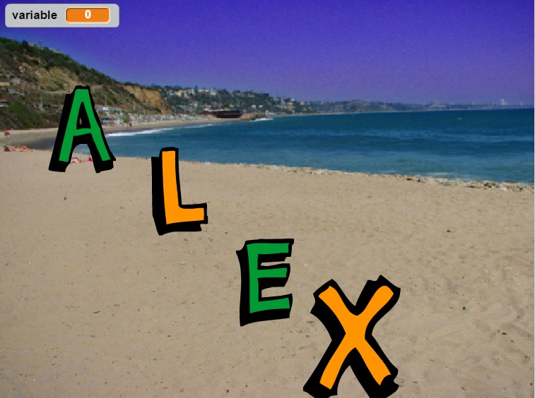
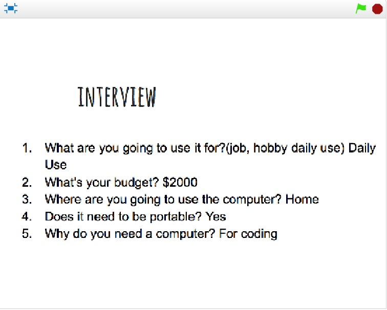

Scratch Content
Name Assignment
Description

Use scratch to design and create a program that shows my name. The requirements were to use a sprite for each letter in my name and give them 3 unique behaviors. The program needed to run when the green flag was clicked and for extra credit I added a function to reset the scene to the beginning each time the green flag was clicked.
Concepts learned
- Using event blocks- specifically green flag clicked and when I receive message
- Used loops-forever loops to constantly switch costumes
- Movement- I used movement blocks to move the letters around the screen and spin some letters
- Looks- used looks blocks to change costumes and size
Computer Buying Project
Description

Description: In this project, we had to find a few computer options for a specific person that we interviewed. We also had to list and have a description of the computer parts. In the end, we had to pick one computer and explain why we chose it. We chose the Dell XPS as the winner for Salah’s dad.
Concepts Learned
- Control blocks- used if statements with sensing blocks inside so that the slide changed every time the space bar was clicked
- Used costumes to change each slide
- Used go to blocks to center the sprites in each slide
- Variables for velocity
- How to make a timer that counts down by using a variable
- Used loops to make an enemy spaceship go after you forever
- Used if blocks to make the enemy shoot if they were within a certain range
Scratch Final Project
Description

Description: For the final project, we could either make a story or a game. I made a game and the requirements were that you had to be able to win, there had to be a score, there had to be a timer, multiple levels, and the levels had to be more challenging as time goes on.